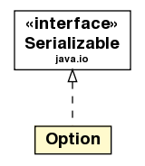

jason.asSemantics
Class Option

java.lang.Object
 jason.asSemantics.Option
jason.asSemantics.Option
- All Implemented Interfaces:
- java.io.Serializable
public class Option
- extends java.lang.Object
- implements java.io.Serializable
An Option is a Plan and the Unifier that has made it relevant and applicable
- See Also:
- Serialized Form
| Methods inherited from class java.lang.Object |
equals, finalize, getClass, hashCode, notify, notifyAll, wait, wait, wait |
Option
public Option(Plan p,
Unifier u)
clone
public java.lang.Object clone()
- Overrides:
clone in class java.lang.Object
toString
public java.lang.String toString()
- Overrides:
toString in class java.lang.Object
setPlan
public void setPlan(Plan p)
getPlan
public Plan getPlan()
setUnifier
public void setUnifier(Unifier u)
getUnifier
public Unifier getUnifier()
getAsDOM
public org.w3c.dom.Element getAsDOM(org.w3c.dom.Document document)
- get as XML